Home Page
A sunset walk on the Union Canal
You'd be mistaken for thinking that I'd learned from prior experiences of going out for walks far too late in the afternoon and only getting back after dark. It would appear not...
In the past month or so, since getting a new camera, I've had to have a little bit of mental argumentation with myself every time I leave the house. The point which I am trying to resolve: which camera to bring? I usually choose the best tool for the job, and, given my slight oversight with sunset times this walk, I surmised that my old Canon 600D would likely perform better given the conditions.
 I set off from Central Edinburgh along the Union Canal, heading out to the West. The Union is something of a natural corridor, as can be seen from the above photograph. This area is barely out of the most central parts and already the speed of the transition to near complete countryside is remarkable. It is especially lovely at the very fringes of the day - dawn and dusk - that is on a day where there is not an unrelenting lump of grey cloud above you!
I set off from Central Edinburgh along the Union Canal, heading out to the West. The Union is something of a natural corridor, as can be seen from the above photograph. This area is barely out of the most central parts and already the speed of the transition to near complete countryside is remarkable. It is especially lovely at the very fringes of the day - dawn and dusk - that is on a day where there is not an unrelenting lump of grey cloud above you!
The towpath then bends around towards Polwarth church, which is a truly beautiful building and rather cements the village-like atmosphere so atypical of this part of the world. The contrast between its high-reaching steeples and the low elevation of the canal is something to behold, and it makes you feel rather inferior standing below such a grand structure.

I had noticed after a few test shots that I couldn't seem to get the settings right on the camera for the light. I started to wonder whether my much more modern Panasonic camera would have handled it better - that was until I remembered something I had discovered a few winters ago on the 600D. If you crank the sensitivity right up to full, then use the monochrome mode, the results are frankly profound:
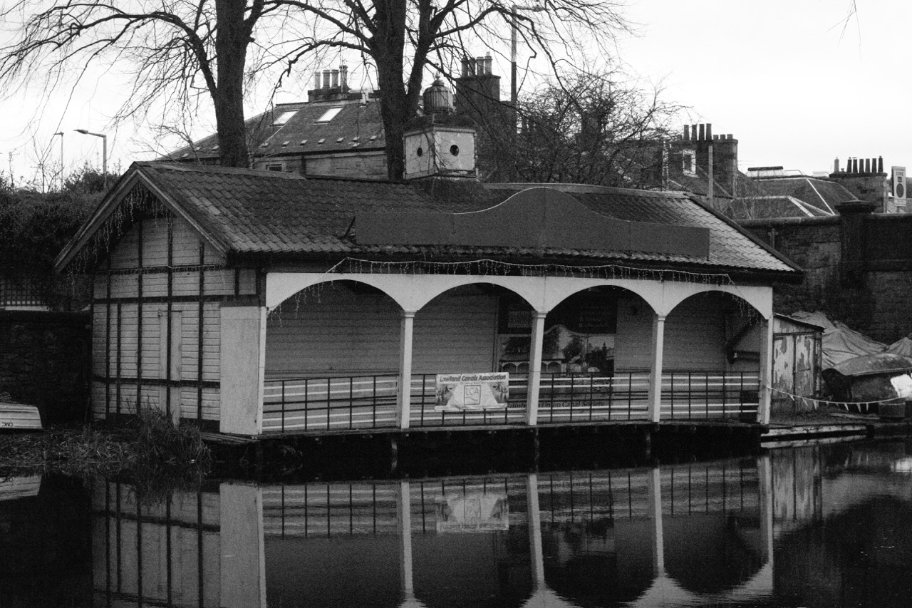

 Not only is the low light performance now frankly exceptional, the noise that doing this creates looks incredibly artful and cinematic, rather than digital and cheap. I continued progressing towards the inevitable outcome of this walk: the quickly approaching twilight beginning to encroach already even. I was furiously trying to decide as I walked along ever quicker whether I even had the time to do the extended route of this walk. As I rounded the corner and passed over the viaduct at Slateford, I knew I didn't have long to make that call.
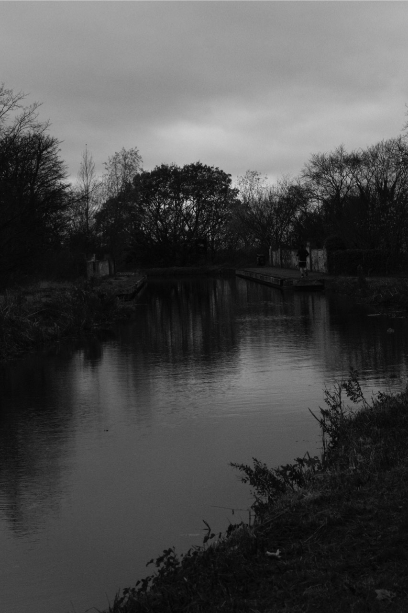
Not only is the low light performance now frankly exceptional, the noise that doing this creates looks incredibly artful and cinematic, rather than digital and cheap. I continued progressing towards the inevitable outcome of this walk: the quickly approaching twilight beginning to encroach already even. I was furiously trying to decide as I walked along ever quicker whether I even had the time to do the extended route of this walk. As I rounded the corner and passed over the viaduct at Slateford, I knew I didn't have long to make that call.
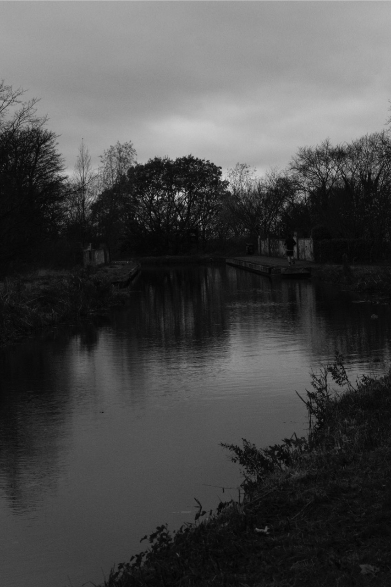
The extended version of the walk does not simply go along the canal and then back again. Around 2 miles along the canal's length is a crossing point with the Water of Leith walkway, where one can loop back around through the North-West of the city, back to the centre. Walking 5 miles into an inevitable twilight did not necessarily sound the greatest of ideas, but I considered that perhaps, were I to walk fast enough, I could just about manage it.
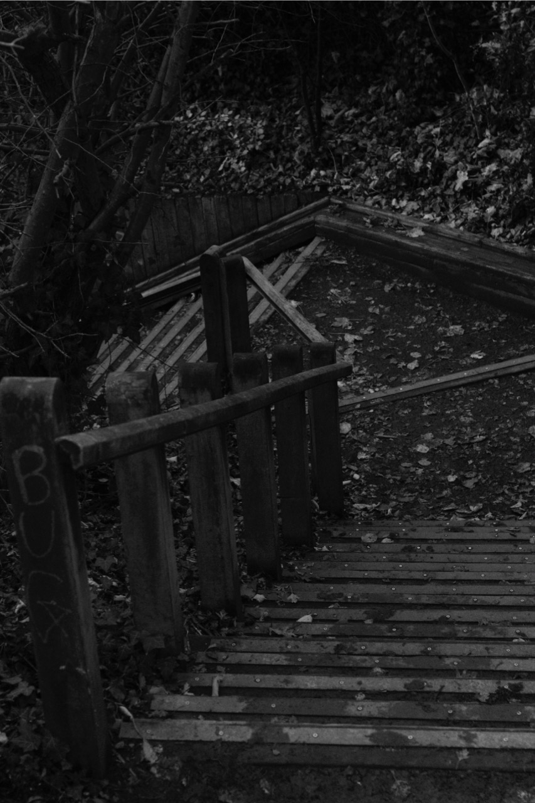
These stairs were the point at which a decision had to be made. I remember quite vividly faltering at the top, nervously looking down at the sunset indicator panel on my watch, then choosing to blindly proceed anyway. What did I really have to lose?
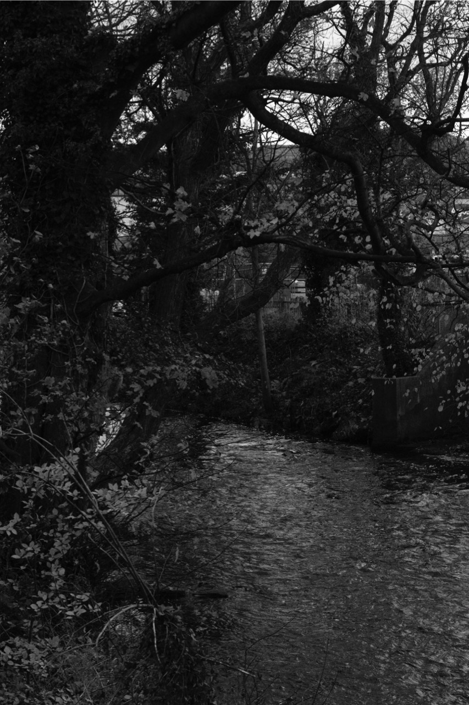
The Water of Leith, at the point at which I stood at least, was not as entirely green and countryside-esque as the Union Canal mere meters above it. It threads its way apologetically around the rather dominant face of industry in these parts, being shoved to and fro by industrial estates, factories and newly gentrified residential buildings. The walk is an interesting one, and unlike the slow and peaceful nature of the Union canal, the Water of Leith feels more like a theme park, in the sense that there are so many opposing areas and styles of places in such quick succession.

Saughton is mostly residential, or at least the parts of it through which the Water of Leith flows are. After the desolation and industrial waste of the factories through which one has just walked, the transition to the completely opposing nature of Saughton Park's iconic walled gardens is quite heartening. Even in the dark it made me want to keep going. And from walled gardens to stadiums, and the next stop on the Water of Leith's dynamic journey is Murrayfield:
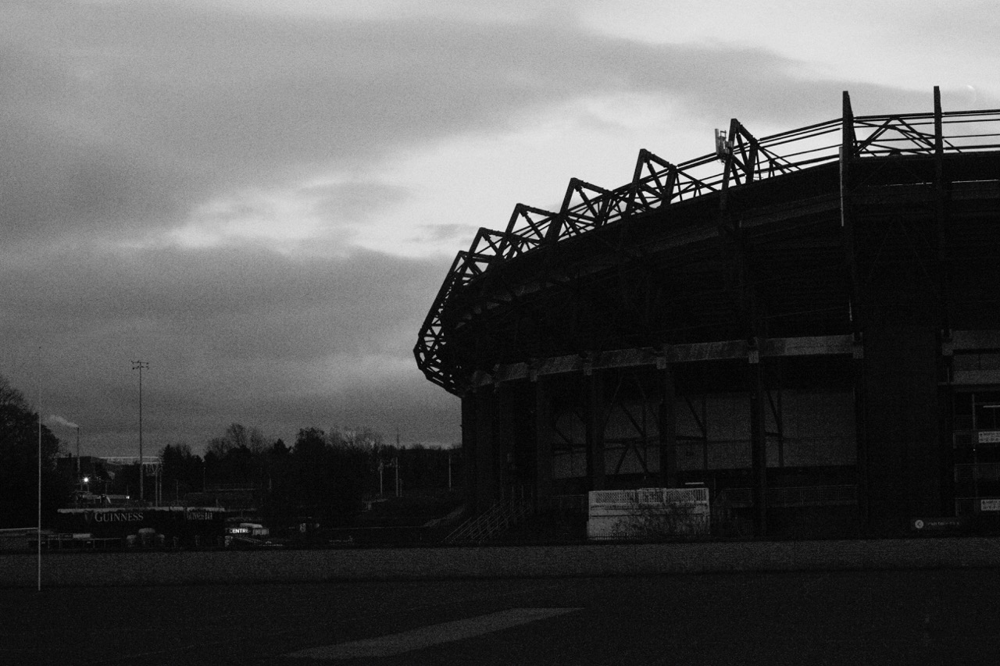
Contrasted against the now rapidly declining light, presented in an ominous black and white and failing miserably to fit in with the natural surroundings of Roseburn Park, Murrayfield Stadium looks even more like an alien spacecraft than it usually does. I feel that the Water of Leith is something of a fly on the wall in this case - it flows harmlessly through so many different places and dodges out of their way whenever they get too close; it sees everything it passes, but it merely observes, it never interferes.
Having been lost in a bit of a bubble of trying to come up with unbelievably contrived metaphors, I had failed to notice the pace of my walking was decreased to something of a dordle. I quickly picked it up, hastened not only by the now all-but-absent light and the fact that I was only about three quarters of the way round, but also by a rather motivating dark cloud which was fast approaching from the West.
The final leg was the nicest, and the one I had purposefully saved for last. The Dene Village is lovely, except slightly touristy, though the one advantage of doing it at this time of night is that the tourists would hopefully all be having tea (fingers crossed), so I might get beautifully deserted old streets to photograph.
As I descended down the steps to the Dene, I looked back over my shoulder up to the Roseburn Path Viaduct. Much like with Polwarth Church earlier, I felt completely overpowered by seeing such a large structure from such a low angle, though the feeling was notably stronger, perhaps given the lack of light.
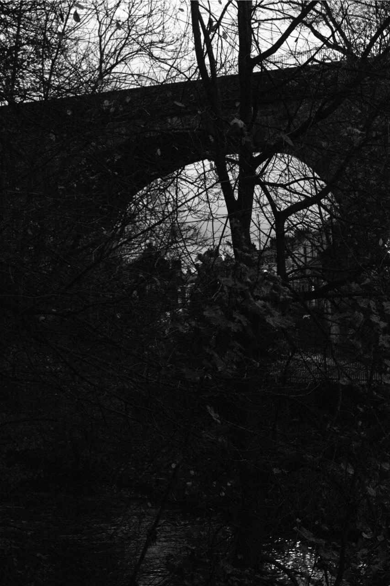
Looking the other way, the last of the light illuminated the cottages on the bank of the water, which mark the transition back into central Edinburgh once again.
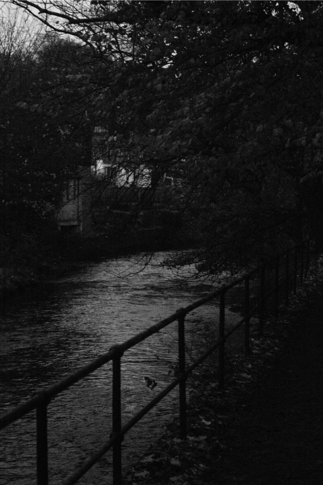
I was rather grateful for the tennis club which sat over the other side of the water, as their floodlights provided the illumination I needed to get through what were perhaps the darkest parts of the walk yet, and the last little fringe before I got to my treat: a near-empty Dene Village to photograph.
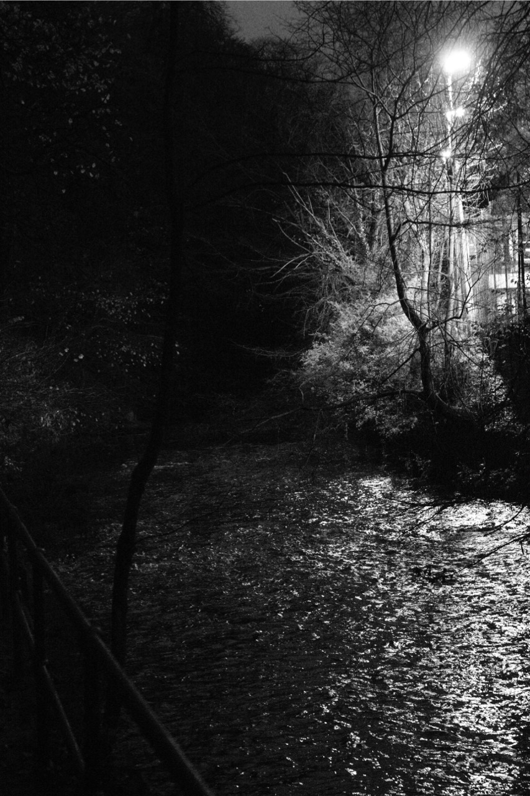
Getting rather desperate at this point, I finally rounded the corner to the Dene Village. Whilst not quite empty, the foot traffic was low enough that it made for great subject matter, rather than the usual visual noise:
 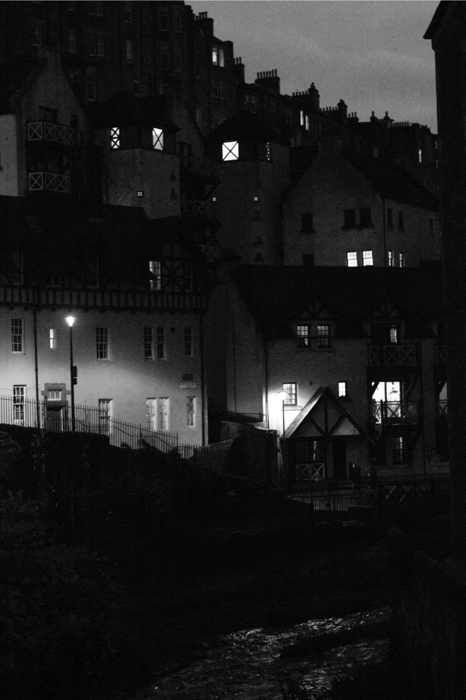
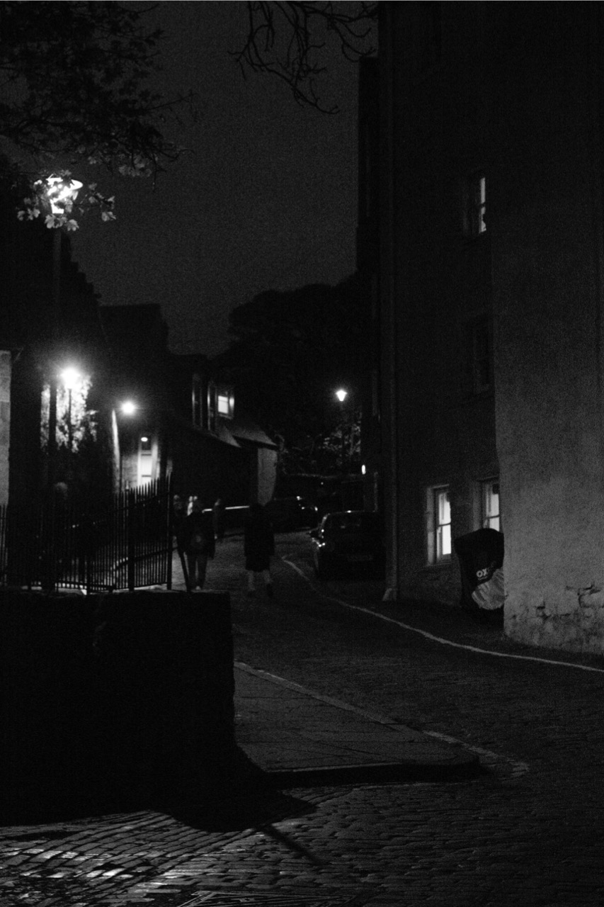
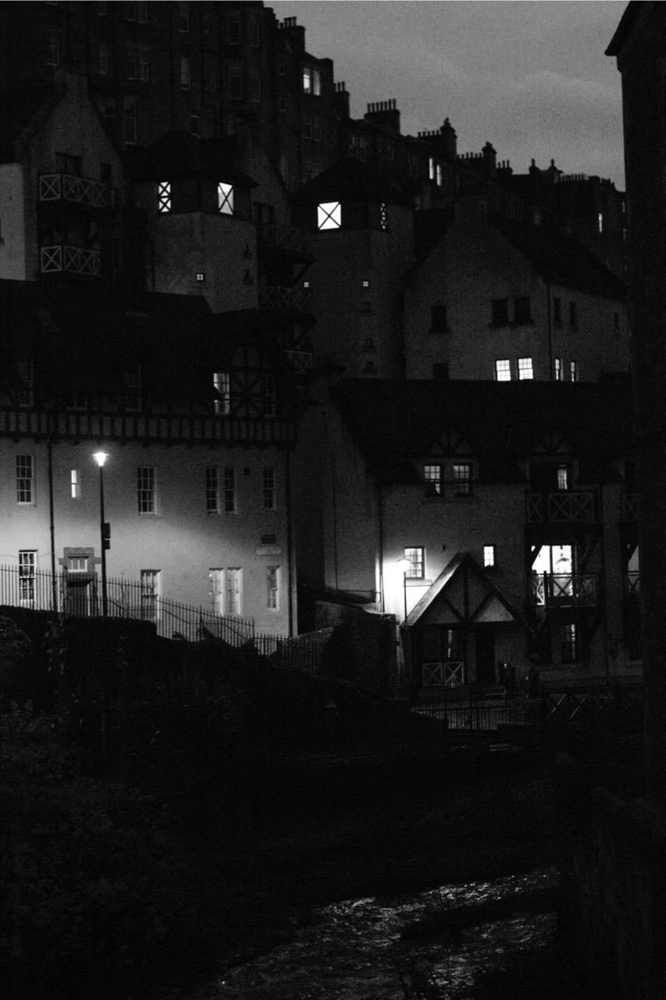
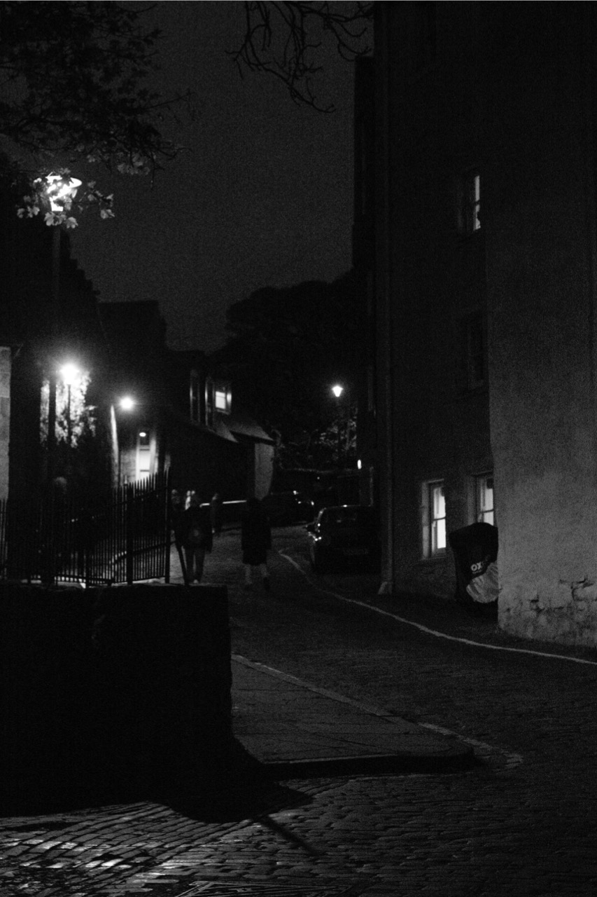
 Thus, as I made the journey back up the hill and emerged out onto the streets of the Capital, I had the chance to reflect. How had the experience changed me What could I take from this walk?
Thus, as I made the journey back up the hill and emerged out onto the streets of the Capital, I had the chance to reflect. How had the experience changed me What could I take from this walk?
Well, how about not going out an hour before sunset is due!!!